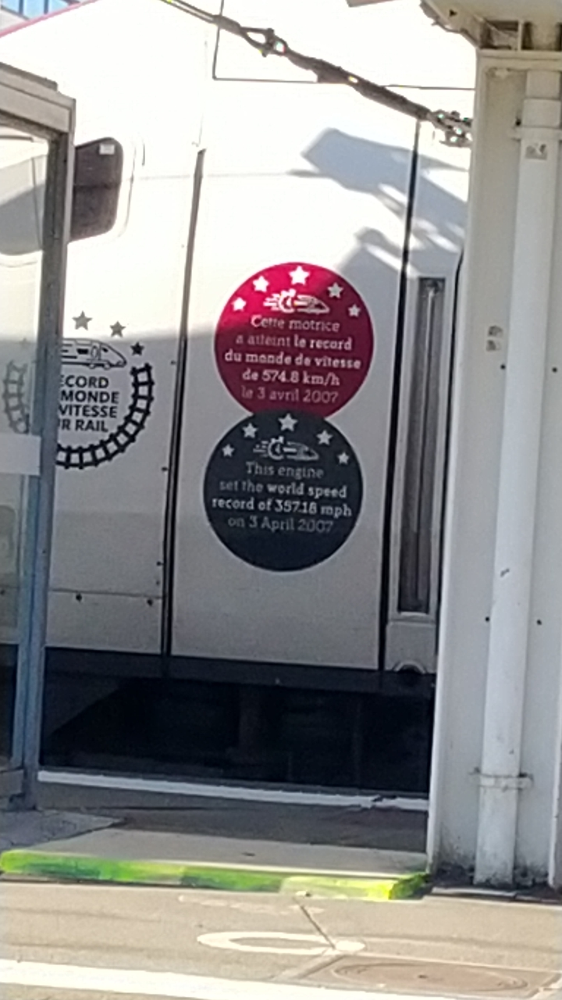
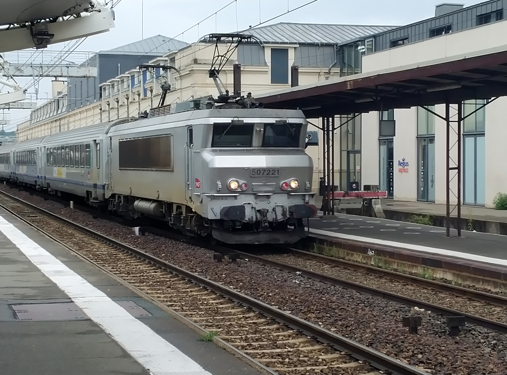

Le chemin de fer dés son inventions au début du XIXéme siécle est un moyen de transport très rapide, le plus rapide à cette époque.
Le chemin de fer à écartment standard (1435mm)
Avant la SNCF (1810-1840)
La première ligne
L'âge d'or du ferroviaire (1840-1936)
Les premières compagnies et grandes lignes
Le début des grandes compagnies et plan Freycinet

La première guerre mondiale (1914-1918)
La SNCF (1937-1997)
La seconde guerre mondiale (1939-1945)
L'aprés guerre
La fin d'une époque: la traction vapeur (1972-1975)
Le lancement du Corail: le confort sur rail (1977)

Une voiture Corail en gare de Tours
l'arrivée du TGV Sud-Est: Paris-Lyon - Lyon (1981-1982)
La LGV Atlantique: Paris-Montaprnasse - Le Mans & Tours (1989-1990)
La LGV Nord: Paris-Nord - Lille - Calais-Frétun (1993-1996)
La SNCF et RFF (1997-2020)
Le reccord du monde du 3 avril 2007: 574.8 km/h

La rame de reccord du monde du 3 avril 2007, en gare du Mans arborant sa nouvelle livrée spécial JO 2024
La LGV Bretagne - Pays de la Loire & la LGV Sud Atlantique (2017)
Le groupe SNCF (2020- de nos jours)
Le dernier train de nuit, et les derniers corails, vestiges d'une époque révolue (Snifff)
Une rame de Corail tracté par une locomotive 7200 livrée béton, au Mans, assurant la liaison Paris-Montaprnasse - Chartres - Le Mans